01 · INTRODUCTION
Overview
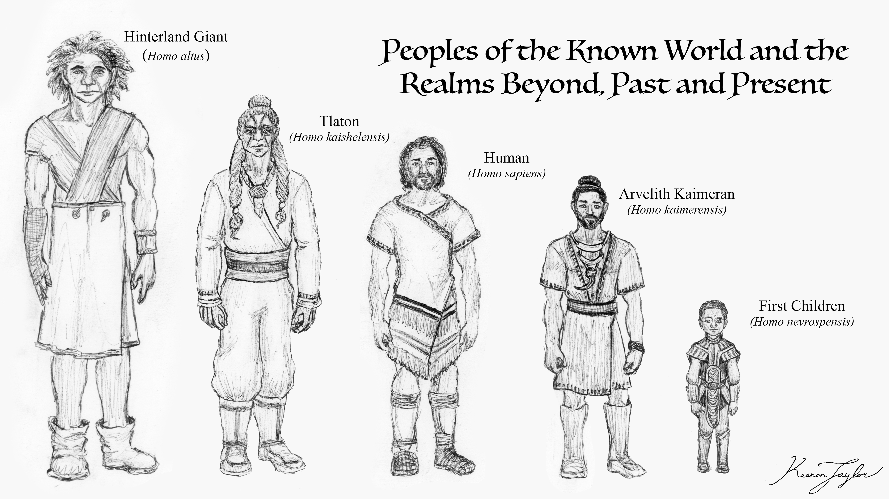
Human evolution on Kaimere differs markedly from that of Earth. Whereas modern Earth supports a single surviving human species, Kaimere is inhabited by numerous distinct human lineages, many of which have evolved independently for hundreds of thousands of years. Depending upon taxonomic interpretation, between ten and fifteen species of human are currently recognized across the Known World and beyond, with additional lineages known from archaeological remains and historical accounts. Their diversity reflects the unusual antiquity of human occupation on the planet, repeated migrations across its continents and island chains, and prolonged periods of geographical isolation.
The peoples most familiar to the Known World, collectively known as Kaimerans, represent only the most recent major human lineage to become established there. Their ancestors arrived approximately 250,000 years ago, originating from populations in northern Africa. They belonged to, or were closely related to, Homo sapiens, although the precise taxonomic identity of the original population remains debated. By contrast, many peoples living beyond the Known World descend from an earlier introduction of Homo erectus, whose descendants spread across Kaimere more than a million years before the arrival of the Kaimeran ancestors. These populations subsequently developed into distinct species, producing a human diversity more comparable to that of the Late Pleistocene Earth than to the modern human population of our own planet.
This evolutionary history has also produced considerable differences in human growth, maturation, reproduction, and senescence. Some species mature earlier than modern humans, while others have substantially prolonged childhoods and reproductive development. The Kaimerans are particularly unusual: through the development of hereditary magic, they have acquired lifespans extending into several centuries, accompanied by prolonged childhood, delayed puberty, and an exceptionally long gestation period. At the opposite extreme, the First Children appear to have possessed lifespans measured in millennia, with physiological maturity delayed for several centuries.
These differences are not merely variations in longevity. They influence the organization of families, the transmission of knowledge, social relationships, education, population growth, and the ways in which different human populations understand age and adulthood. On Kaimere, chronological age is often a poor indicator of an individual's physical or psychological development, particularly in societies where several human species coexist.
02 · The Beginning
The First Human Populations
Arrival and Dispersal of Homo erectus
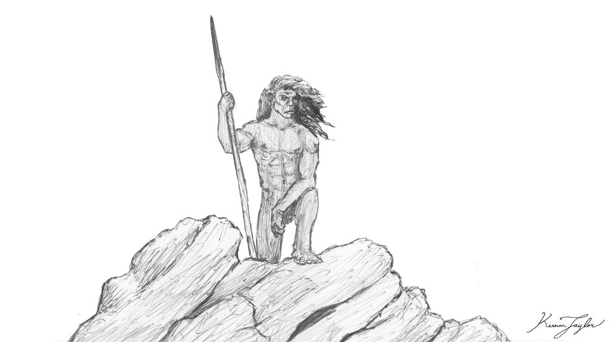
The earliest major human introduction to Kaimere occurred approximately 1.5 million years ago, during the Pleistocene. At this time, the planet was undergoing substantial ecological instability associated with shifting ocean currents and a more pronounced axial tilt. Widespread aridification altered the distribution of habitats and created dynamic environmental conditions across much of the Known World. The newly introduced Homo erectus proved highly successful in these circumstances, spreading rapidly through the available territories.
By the conclusion of this introduction, archaic human populations were established on both major continents and numerous islands wihtin the Known World. Their success appears to have been associated with a capacity to exploit changing environments and adapt to unfamiliar ecological pressures. Kaimere's unusually dangerous fauna and fluctuating climates may also have encouraged several departures from the physical and behavioral characteristics of contemporary Earth populations. Archaeological interpretations suggest trends toward greater average stature, accelerated juvenile development, and the adoption of new technological traditions. Some populations also developed maritime capabilities that would eventually make possible the extensive dispersals of the following million years.
Approximately one million years ago, another period of climatic deterioration affected the Known World. Increasing aridity reduced the carrying capacity of many established habitats, while human populations had expanded sufficiently to place greater pressure on local resources. A considerable number of Homo erectus groups consequently left the Known World in search of new territories. This movement was not a single migration but a broad dispersal involving populations from different regions and separate maritime routes.
Arvelith populations traveled south to Kaishel, where their descendants became the Tlaton. Groups originating in Pakardia crossed to the eastern coasts of Kairul and spreading throghout the continent, while their Ni'Khari relatives spread along the western coast of the same continent. Other populations reached the Permian Islands and numerous smaller archipelagos. These migrations established the foundations of most non-sapiens human populations on Kaimere.
Once separated by oceans, mountain ranges, and other geographical barriers, these populations developed independently. Over the subsequent million years, isolated groups accumulated anatomical, physiological, and behavioral differences sufficient to justify their classification as distinct species. Their evolutionary trajectories were shaped by the environments they inhabited. Some became unusually tall, others developed more compact and robust bodies, while others evolved distinctive patterns of growth and sensory or communicative abilities.
The resulting distribution of human species is not entirely settled. Some populations exhibit considerable admixture, and the boundaries between closely related groups are not always clear. The Assembly's classifications therefore reflect both anatomical evidence and competing interpretations of ancestry. In particular, some populations recognized as species by the Assembly are considered by other scholars to be highly differentiated subspecies or mixed populations.
Human Diversity of the Known World and Beyond
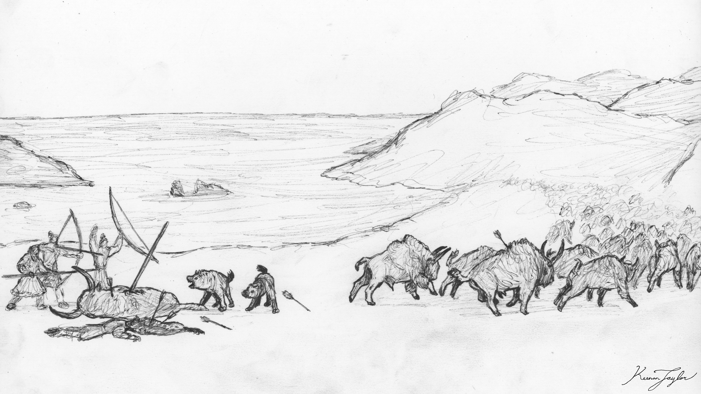
Among the descendants of the early dispersals, Homo altus is particularly significant to the modern history of the Known World. The species is descended from Arvelith Homo erectus populations that remained on the continent after their initial introduction. Its name refers to its exceptional stature, with males of the western or hinterland populations commonly reaching approximately eight feet in height.
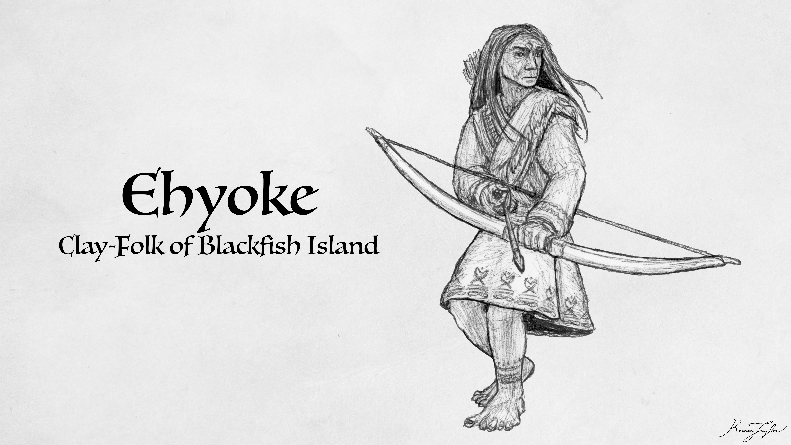
Other populations retain much smaller body proportions. The Ehyoke of the Blackfish Islands, for example, are described as short and stocky people whose ancestry is believed to derive from archaic human populations that inhabited the archipelago before the arrival of the Kaimerans. Similar small-bodied populations occur in the highlands of Pakardia and elsewhere among the islands. Their distribution suggests that the early human colonization of these regions was more extensive than the surviving archaeological record alone would indicate.
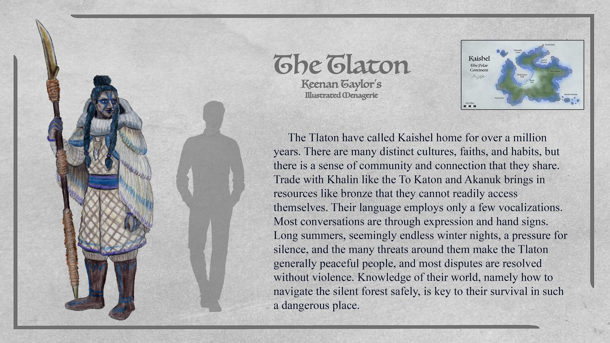
The Tlaton of Kaishel represent another major branch of this early dispersal. Classified as Homo kaishelensis, they have occupied Kaishel for more than a million years and developed a distinctive combination of physical, physiological, and cultural adaptations. Their relatively prolonged development, restricted vocal range, and strong dependence upon silent communication are particularly notable. Their evolutionary history demonstrates that the descendants of Homo erectus did not simply diverge in body size or physical appearance, but also developed different life-history strategies.

The Maku of western Kairul occupy a more complicated position. Classified by the Assembly as Homo selikus, their ancestry appears to include contributions from Homo altus, Homo sapiens, other Kairulan populations, and lingering homunculi-derived traits. Their species designation remains contentious, as their present-day characteristics do not correspond neatly to a single ancestral population. They mature somewhat more rapidly than ordinary humans, with sixteen years of age broadly corresponding to eighteen among modern humans. Their average lifespan is estimated at approximately eighty years, although considerable uncertainty remains.

Even the First Children, whose civilization profoundly influenced the development of the Known World, are generally believed to have originated from this older human radiation. They are commonly classified as Homo nevrospensis and are thought to have descended from an insular population of Homo erectus. Their ancestry is not conclusively established, however, and evidence of Homo sapiens or Kaimeran admixture has led some scholars to propose a more complicated origin.
The distribution of these populations demonstrates that human evolution on Kaimere has not followed a single linear progression. It has instead produced numerous regional lineages, each shaped by its own evolutionary history. The arrival of the Kaimeran ancestors did not replace this diversity, and in many regions the older human populations remained dominant.
03 · THE KAIMERANS
The Kaimeran Lineage
The Introduction of the Kaimeran Ancestors
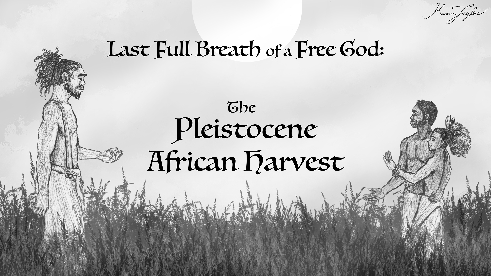
Approximately 250,000 years ago, another human population was introduced to Kaimere. Its precise identity remains debated. The prevailing interpretation identifies it as an early population of Homo sapiens originating in northern Africa, although some researchers propose that it represented a transitional population between Homo heidelbergensis and modern Homo sapiens. Whatever its precise classification, this group eventually gave rise to the Kaimerans, formally classified as Homo kaimerensis.
Their initial success was uneven. They did not immediately displace the established archaic human populations across the continental interiors. Instead, their integration appears to have been especially successful in the southern islands, the territories that would later become the Free States, and Pakardia. From these regions they gradually expanded throughout the Known World, often assimilating with or intermingling with indigenous populations. Nevertheless, the older human species remained numerically and culturally dominant in many parts of both major continents.
Physically, Kaimerans are broadly similar to other members of Homo sapiens, although they are generally somewhat shorter than the average modern human. Their most conspicuous anatomical distinction is the pointed tip of the external ear. Their present-day biology, however, is considerably more unusual than their general appearance suggests.
Kaimerans did not possess their characteristic longevity when they first arrived on Kaimere. Their ancestors appear to have had lifespans and developmental patterns broadly comparable to those of other human populations. The extraordinary aging process observed among modern Kaimerans emerged much later, following the disappearance of the First Children. Its precise origin remains unknown, although it is generally associated with hereditary magic.
The Emergence of Hereditary Longevity
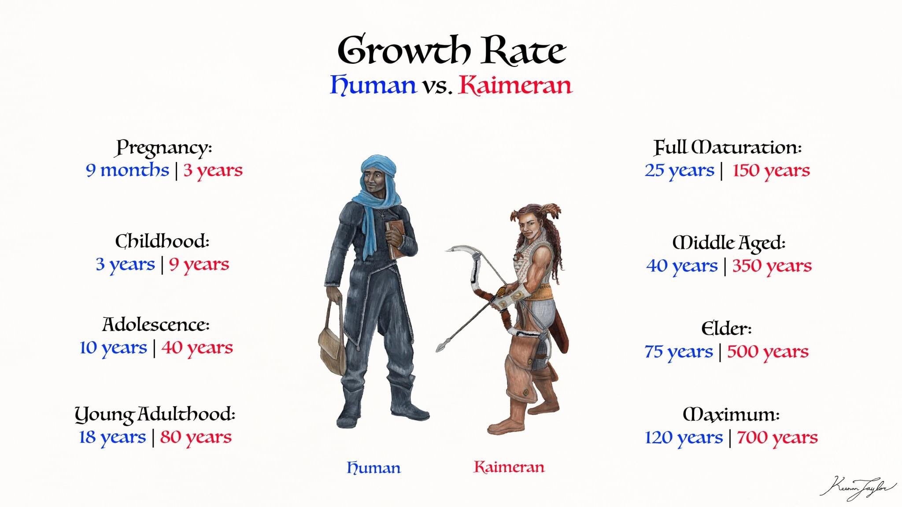
The prolonged lifespan of modern Kaimerans is one of the most distinctive biological characteristics of the species. Unlike the condition of ordinary humans, whose bodies undergo progressive senescence over several decades, Kaimeran aging is divided into two markedly different phases. During most of their lives, hereditary magic preserves the body and slows the ordinary processes of aging. Once this protection begins to fail, however, physical deterioration accelerates considerably.
The development of this condition appears to have become universal among Kaimerans by approximately 6,000 years ago, at the advent of the Age of Witches. Its earlier history is poorly understood. The hereditary nature of the trait suggests that it became integrated into Kaimeran inheritance rather than remaining a temporary magical condition acquired during an individual's lifetime. Its origins, however, have not been established, and scholars continue to debate how the transformation first occurred.
Most Kaimerans live into their sixth or seventh century. Their bodies remain comparatively youthful for much of this period, with the protective effects of hereditary magic delaying the physical deterioration normally associated with aging. Eventually, however, this protection weakens. The decline appears to be progressive: as the hereditary magic becomes less effective, the body's ordinary aging processes become increasingly pronounced. The deterioration may then compound upon itself, causing an individual who has remained physically vigorous for centuries to become visibly old within a comparatively brief period.
Consequently, the final decades of a Kaimeran's life can be very different from the centuries that precede them. An individual may pass from what would be considered middle age by human standards to extreme old age in the space of only a few decades. This abrupt transition is one reason why Kaimeran longevity should not be understood simply as an extension of the ordinary human lifespan. It represents a distinct pattern of aging in which prolonged preservation is followed by accelerated senescence.
The condition is also inherited by Kaimeran children, making it a defining characteristic of the modern population. Its effects are not limited to the preservation of adult bodies. It influences the entire life cycle, including childhood development, reproductive physiology, and the timing of sexual and social maturity.
04 · AGING AND MATURITY
Growth and Development
Childhood and Delayed Maturation Among Kaimerans
Kaimeran development is unusually prolonged, particularly after infancy. During the first two years of life, growth is relatively rapid. Infants develop at a surprising rate considering their eventual lifespan, and their early development does not appear to be proportionately extended by the longevity they will later experience.
After this initial period, however, growth slows dramatically. Once children begin walking and speaking, their physical and cognitive development proceeds at a markedly reduced rate. A ten-year-old Kaimeran typically resembles and behaves much more like a three-year-old human child than an individual of equivalent chronological age. This prolonged childhood continues through adolescence, with puberty generally not beginning until approximately forty years of age.
The transition into adulthood is correspondingly delayed. Most Kaimeran societies recognize adulthood through ceremonies held between seventy and one hundred years of age, although the precise age varies among cultures. These ceremonies generally reflect an individual's physical, psychological, and social development rather than the simple passage of a fixed number of years.
This pattern has important implications for population growth. Kaimerans require considerably longer than ordinary humans to reach reproductive maturity, and their prolonged childhood means that the interval between generations is substantially greater. Their long lifespan does not necessarily produce an equivalent increase in reproductive output. Instead, the species has a comparatively slow life history, with development and reproduction spread across a much longer period.
Comparative Development among Human Species
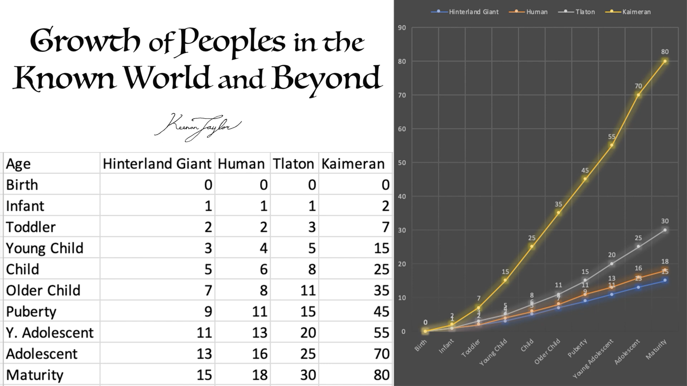
The contrast between Kaimeran development and that of other human species is particularly pronounced in regions where populations live together. The hinterland settlements of Arvel and Ni'Khar, as well as villages on the Houze Prairie, frequently contain both Kaimerans and Hanukketh. These communities provide an unusual opportunity to observe two human species with substantially different developmental schedules living within the same social environment.
The Hanukketh, or hinterland giants, are considerably faster-developing than Kaimerans. They typically enter puberty at approximately nine years of age and reach adulthood around fifteen. Their physical growth is correspondingly rapid, and their bodies attain a size far greater than those of their Kaimeran neighbors. Adult males commonly reach approximately eight feet in height.
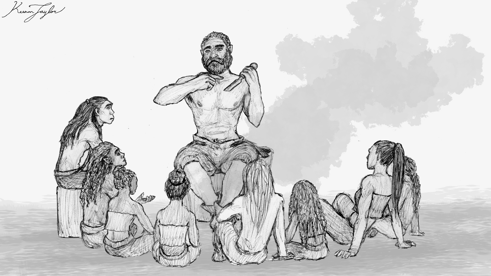
In mixed settlements, chronological age is not necessarily treated as the principal indicator of maturity. A forty-year-old Kaimeran and a ten-year-old Hanukketh may be at broadly comparable stages of physical and psychological development. Although the Kaimeran has accumulated more years of life experience, both individuals may have similar levels of cognitive and social maturity. Consequently, children of both species are often educated and socialized according to developmental stage rather than numerical age.
These differences are not limited to the speed of learning. Hanukketh children are often observed to excel in kinesthetic and logical disciplines, while Kaimeran children tend to demonstrate greater inclination toward artistic exploration and innovation. Such distinctions are general tendencies rather than fixed limitations, and considerable overlap exists between individuals. Nevertheless, they have become an established part of the educational culture of mixed settlements.
An Arvelith proverb expresses the contrast by observing that a Hanukketh child needs to be shown the proper method only once to become a master, whereas a Kaimeran child must attempt a hundred different methods before becoming convinced of the first method's merits. The saying reflects a broader cultural recognition of their different approaches to learning. Hanukketh children often reproduce the methods demonstrated by an instructor with remarkable precision, while Kaimeran children are more inclined to investigate alternative techniques and question the underlying mechanics of a process.
Both approaches have practical advantages. Kaimeran innovation has contributed to technological developments such as bow suspension bridges and the refinement of metal alloys. Hanukketh precision, meanwhile, makes them exceptionally capable apprentices and craftsmen. Mixed communities have consequently come to value the complementary abilities of both populations.
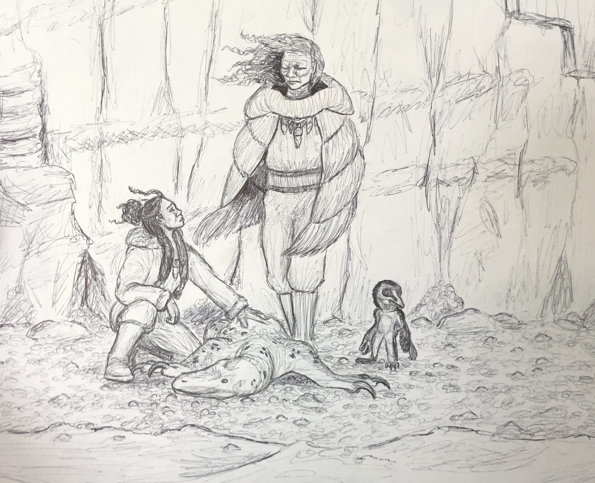
The Tlaton exhibit yet another developmental pattern. Their growth is slower than that of ordinary humans, although considerably faster than that of Kaimerans. Toddlerhood generally extends to approximately three years of age, puberty begins around fifteen, and full maturity is reached at approximately thirty. Their developmental schedule is therefore prolonged relative to that of modern humans, but not to the extraordinary degree observed among Kaimerans.
The Maku, by comparison, mature somewhat faster than ordinary humans. Their sixteen years of age correspond broadly to eighteen among modern humans. Their average lifespan is estimated to be approximately eighty years, perhaps somewhat longer under favorable conditions. This estimate remains uncertain, particularly given the environmental dangers and relatively high risk of accidental mortality in their home region.
The wide variation in these developmental patterns demonstrates that there is no single human life history on Kaimere. Closely related species can differ substantially in the timing of puberty, the duration of childhood, and the age at which individuals are considered mature.
05 · LIFE AND GROWTH
Reproduction and Pregnancy
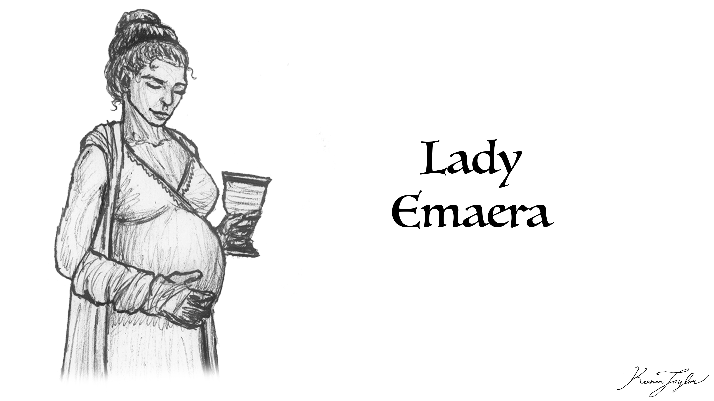
Reproductive physiology among the human species of Kaimere varies considerably, with the Kaimerans exhibiting the most unusual known pattern. Their pregnancy lasts approximately three years, considerably longer than the gestation period of modern humans. The origins of this prolonged pregnancy are uncertain, although Assembly naturalists generally consider it a secondary consequence of the wider changes associated with hereditary longevity.
Despite its duration, Kaimeran pregnancy is comparatively mild. The healing properties attributed to hereditary magic appear to reduce many of the physiological risks normally associated with pregnancy and childbirth. Mothers generally recover rapidly following delivery, and death during childbirth is considered relatively uncommon. This contrasts with many periods of human history in which pregnancy and childbirth represented substantial sources of mortality, with estimates of maternal mortality reaching particularly high levels in some populations.
The relationship between prolonged gestation and hereditary magic is not fully understood. The longer pregnancy does not appear to be necessary simply because Kaimeran children develop slowly after birth. Indeed, their first two years of growth are relatively rapid. Assembly naturalists therefore generally interpret prolonged gestation and delayed development as related consequences of their altered life history rather than as stages of a single continuous slowing of growth.
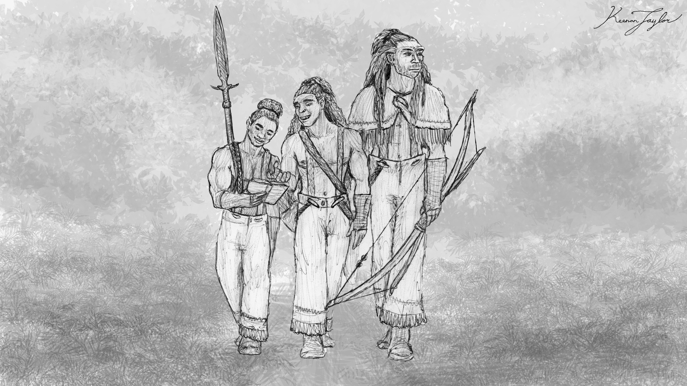
The reproductive compatibility of Kaimerans with other human species is also limited. Unions between Kaimerans and Hanukketh almost never produce fertile offspring. In the rare instances where children are successfully conceived and born, those children are themselves generally infertile. Their development follows a distinct pattern, with lifespans closer to those of Kaimerans but shorter than the typical Kaimeran lifespan. They consequently age at a rate different from either parent population.
Nevertheless, such unions are socially significant in mixed communities. Children born from them are sometimes elected to leadership positions because they represent the union of the two populations. Since these settlements already organize education and social life around developmental stages rather than strict chronological age, the children generally experience fewer difficulties integrating into either community.
Other human populations exhibit different degrees of reproductive compatibility, but the available information is incomplete. The Ehyoke, for instance, reportedly consider unions with Kaimerans forbidden because previous attempts invariably resulted in the deaths of both mother and child before the pregnancy could reach term. The circumstances surrounding these deaths are not well documented, and the reports originate primarily from the accounts of individuals communicating through interpreters. Nevertheless, they suggest that significant reproductive incompatibilities may exist between some archaic human lineages and the Kaimerans.
06 · THE AGING OF "GODS"
The First Children and Extreme Longevity
Among the human populations known from Kaimere's history, the First Children represent the most extraordinary example of extended lifespan and delayed development. Classified as Homo nevrospensis, they are believed to have originated from an insular population of Homo erectus, although possible admixture with Homo sapiens or Kaimeran ancestors complicates their classification.
Their most recognizable physical characteristic was a pronounced degree of neoteny. Adults retained proportions and facial characteristics that made them appear remarkably childlike, a trait that contributed to their name in later historical traditions. This appearance was not indicative of ordinary childhood development. Studies of their fossilized and sub-fossilized remains suggest that they lived for thousands of years and did not reach maturity until at least their third century.
Their extraordinary lifespan appears to have been associated with their mastery of Kaimere's native magic. Unlike modern Kaimerans, whose hereditary magic is an inherited biological trait, the First Children seem to have deliberately manipulated magic through techniques that remain poorly understood. They eventually domesticated it, using its properties to create homunculi and to enhance their own abilities. Their suits of photosynthetic armor, constructed from gemweaver silk and equipped with hydration-inflated wings, provide one example of the unusual technologies developed through this relationship.
The First Children occupied settlements and agricultural centers throughout the Known World, although their principal territories were concentrated in Qajar and the Pakardiant highlands. Their slow development and small stature meant that they required less living space than ordinary human populations. Their sophisticated agriculture, enhanced through magic, further reduced the pressure to expand their territories. Their population could therefore remain comparatively concentrated even as their civilization persisted for millennia.
The disappearance of the First Children approximately 10,000 years ago remains poorly understood. Their long lifespan and delayed reproduction may have contributed to demographic vulnerability, but most historians favor the possibility of a major conflict or some other catastrophic event. The lack of convincing material evidence for a war on the scale necessary to destroy their civilization remains a major obstacle to this interpretation.
Their biological legacy is difficult to separate from their magical and technological history. The First Children did not simply live longer than other humans; they possessed the means to alter the biological characteristics of other organisms. The homunculi they created often exhibited exceptional strength, durability, agility, and longevity, sometimes surviving for thousands of years. Some were capable of photosynthesis, prolonged torpor, or asexual reproduction. These organisms demonstrate the extent to which the First Children could manipulate the relationship between life, development, and aging, although the precise mechanisms involved remain unknown.
07 · THE SILENT PEOPLE OF KAISHEL
The Tlaton and the Influence of Environment
The Tlaton of Kaishel, Homo kaishelensis, provide a useful contrast to the Kaimerans and the First Children. Although their development is slower than that of ordinary humans, their lifespan does not approach the extreme longevity of either group. Their distinctive developmental schedule appears to have evolved within the ecological and cultural conditions of Kaishel.
Most Tlaton communities inhabit coastlines, sheltered bays, estuaries, and offshore islands. The interior forests are dominated by dangerous organisms, including the blind, venomous moørkutlot. These predators have exerted a powerful selective and cultural influence on the surrounding ecosystem. Sound can attract predators, and the resulting pressure for silence extends to the indigenous peoples of the continent.
The Tlaton are capable of speech, despite a widespread reputation among outsiders for being mute. Their vocal range is restricted compared with that of Kaimerans and other humans, and mainland populations in particular observe strong religious taboos against vocalization. Communication relies heavily upon facial expression, body posture, and hand signs. These systems are sufficiently developed to convey complex information, allowing the Tlaton to maintain sophisticated languages without relying upon extensive vocal communication.
Their developmental schedule may be understood within this broader pattern of adaptation. Childhood is prolonged, puberty typically begins around fifteen years of age, and full maturity is reached near thirty. While the precise evolutionary pressures behind this schedule remain uncertain, the combination of a difficult environment, specialized communication, and strong reliance upon accumulated ecological knowledge has made intergenerational learning particularly important to Tlaton society.
Knowledge of safe routes, predator movements, weather patterns, and seasonal changes is essential to survival in Kaishel. Much of this information is transmitted through oral tradition, sign-language performance, and direct apprenticeship. Elders therefore occupy an important position as repositories of practical knowledge, and prolonged development allows younger generations considerable time to acquire the skills required to navigate their environment.
The Tlaton demonstrate that the evolution of human aging cannot be considered independently of cultural and ecological factors. Their slow maturation is not equivalent to the hereditary longevity of the Kaimerans, nor does it represent the extreme developmental delay of the First Children. It is a distinct pattern associated with a different evolutionary history.
08 · THE WESTERN GIANTS LIVE FAST
The Hanukketh and the Evolution of Rapid Growth
The Hanukketh, or hinterland giants, are among the largest human species known to the Assembly. Classified as Homo altus, they descend from Arvelith Homo erectus populations that remained on the continent after the earliest human dispersals. Their present-day distribution is associated with the western and hinterland regions of the Known World.
Their unusually large stature is accompanied by rapid development. Puberty generally begins around nine years of age, and individuals reach adulthood at approximately fifteen. This makes their transition into reproductive and social maturity substantially earlier than that of Kaimerans, but broadly comparable to, or somewhat earlier than, ordinary human populations depending on how maturity is defined.
The hinterland giant's development is particularly notable because of the contrast it produces within mixed settlements. A young Hanukketh may have reached adulthood while a Kaimeran of considerably greater chronological age remains a child. These differences can be difficult to reconcile through age-based social systems, but the communities in which the two populations coexist have developed conventions that prioritize physical and psychological development.
Such arrangements are important because unions between the species are almost never fertile. The two populations can therefore maintain close cultural and familial relationships without becoming fully integrated through interbreeding. Mixed families and communities remain common, and their members often view their differences in development as complementary rather than divisive.
The Hanukketh also illustrate how evolutionary divergence can affect more than physical size. Their rapid growth and early maturity create a markedly different social timetable from that of their Kaimeran neighbors. An individual who has reached adulthood in one population may still be considered a child in another. The resulting differences influence apprenticeship, family responsibility, leadership, and the transmission of skills.
09 · THE KLAEG OF KAIRUL
The Maku and Human Variation on Kairul
The Maku of western Kairul, classified as Homo selikus, are a further example of the complexity of human evolution on Kaimere. Their classification is controversial because their ancestry appears to include several distinct sources. In addition to contributions from Homo altus and Homo sapiens, their population may contain genetic or developmental traits derived from other Kairulan peoples and the homunculi created by the First Children.
Some of these homunculi-derived characteristics resemble those of the extinct Qajarith spotted hyena. Historically, more pronounced traits may have been common, but natural selection appears to have reduced their frequency. Among modern Maku, these characteristics are generally subtle or absent. Some individuals retain slightly enlarged canines, while others display more conspicuous features such as amber or yellow eyes, claws, increased body hair, and prominent hyena-like teeth.
The Maku's developmental schedule is somewhat faster than that of ordinary humans, although less accelerated than that of their presumed soldier-drone ancestors. Sixteen years of age corresponds approximately to eighteen among modern humans. Their lifespan is estimated at around eighty years for individuals who are not witches, although this figure is necessarily approximate. Their environment is dangerous, and accidents, disease, and other causes of mortality complicate estimates of maximum lifespan.
The Maku therefore occupy an intermediate position within the human diversity of Kaimere. Their biology is not characterized by the extreme longevity of the Kaimerans or the unusual developmental delay of the Tlaton. Instead, their evolutionary history appears to have produced a relatively conventional human lifespan combined with a slightly accelerated maturation schedule and a distinctive mixture of inherited traits.
10 · LONGEVITY
Aging, Magic, and the Boundaries of Human Biology
The extraordinary differences in human longevity on Kaimere raise questions about the relationship between ordinary biological aging and magic. Among most human populations, aging appears to follow patterns that broadly resemble those of modern humans, although the timing of development and senescence varies substantially. The Maku and Hanukketh mature relatively quickly, while the Tlaton develop more slowly. The Kaimerans and First Children, however, represent fundamentally different conditions.
In the Kaimerans, hereditary magic appears to preserve the body for several centuries. This effect is inherited and sufficiently widespread to be considered a defining biological feature of the modern population. Its gradual decline produces a corresponding acceleration in physical aging, suggesting that longevity is conditional upon the continued effectiveness of the hereditary trait.
The First Children appear to have achieved a comparable, though substantially more extreme, result through deliberate manipulation of native magic. Their lifespans extended into thousands of years, and their maturation was delayed for centuries. Unlike the Kaimerans, whose condition appears to have become a universal inherited characteristic, the First Children's longevity was associated with a civilization that actively studied and manipulated magic.
It is important, however, not to assume that these two conditions are biologically identical. The origins of Kaimeran hereditary magic remain unknown, and the First Children's techniques have not been reproduced or fully understood. Their similar effects on lifespan do not necessarily indicate a shared mechanism.
The same caution applies to the homunculi. Their extraordinary longevity and altered physical characteristics are products of deliberate magical modification, not necessarily the result of ordinary human evolution. Although some homunculi are derived from human stock, their biological condition is sufficiently altered that conventional comparisons with human aging may be misleading.
These distinctions are particularly important for understanding the First Children's legacy. They were capable of producing organisms that could survive for millennia, enter torpor for centuries, or reproduce in ways not normally associated with their ancestral species. Such abilities demonstrate the potential of Kaimere's magic to alter fundamental biological processes, but they do not establish how these processes operate in unmodified human populations.
11 · EVOLUTION GOING FORWARD
Human Evolution as a Continuing Process
The diversity of human life on Kaimere is the product of repeated introductions, dispersals, and periods of isolation. The arrival of Homo erectus approximately 1.5 million years ago established the foundations of most non-Kaimeran human populations. Their descendants dispersed across continents and islands, becoming distinct species through prolonged separation and adaptation to local environments. The later arrival of the Kaimeran ancestors approximately 250,000 years ago introduced another human lineage, which eventually became dominant across much of the Known World without eliminating the older populations.
The resulting diversity is reflected not only in anatomy but in the fundamental organization of the human life cycle. The Hanukketh reach maturity at approximately fifteen years of age, while the Tlaton do so around thirty. The Maku mature somewhat faster than ordinary humans and may live somewhat longer. The Kaimerans can remain physically youthful for centuries, while the First Children appear to have delayed maturity for hundreds of years and survived for millennia.
These differences have shaped the societies in which the species live. They influence education, family structures, reproductive compatibility, relationships between generations, and the ways in which communities define adulthood. In mixed settlements, chronological age is often subordinate to developmental stage, allowing individuals from different species to participate in common social institutions despite vastly different life histories.
The Kaimerans provide the most striking example of the interaction between human biology and Kaimere's native magic. Their hereditary longevity has transformed the ordinary human timetable, extending childhood, delaying reproduction, and preserving adult bodies for centuries before a comparatively rapid period of senescence. The First Children demonstrate an even more extreme capacity for biological alteration, although their longevity appears to have depended upon techniques that have since been lost.
Ultimately, human aging on Kaimere cannot be described through a single developmental pattern. It is the outcome of several independent evolutionary histories, some shaped predominantly by natural selection and environmental pressures, others profoundly altered by the influence of native magic. The planet's human populations therefore differ not only in how they look or where they live, but in the very pace at which they experience life. Their coexistence has produced societies in which childhood, adulthood, and old age are relative conditions rather than universally shared stages of existence.
11 · CONFLICTS WITH AGING
Social Consequences of Divergent Lifespans
The biological differences between human species have profound social consequences. In regions where Kaimerans live primarily among other Kaimerans, their unusual life history is often treated as an ordinary feature of human development. Age is understood according to local conventions, and the long transition from childhood to adulthood forms the basis of education, family organization, and social responsibility.
The situation is more complicated in mixed settlements. Kaimerans, Hanukketh, and other human populations may share households, work, and social institutions despite reaching maturity at very different chronological ages. In these environments, communities have learned to distinguish biological development from time lived.
The hinterland ring-towns provide a particularly clear example. Their populations place greater emphasis on developmental stages and capabilities than on numerical age. A forty-year-old Kaimeran may be treated as a peer to a much younger Hanukketh because both are at similar stages of development. Education is organized accordingly, and children of both species can participate in the same institutions even when their chronological ages differ dramatically.
This approach also helps accommodate individuals of mixed ancestry. Children born from the rare fertile unions between Kaimerans and Hanukketh develop at a distinct rate, neither matching the typical Hanukketh schedule nor following the full Kaimeran pattern. Their development is not necessarily a source of social difficulty because the communities in which they are raised already recognize that chronological age is an imperfect measure of maturity.
Relationships between Kaimerans and modern humans are more difficult, particularly in the Free States. Modern Homo sapiens were introduced to the Known World much later than the ancestors of the Kaimerans, initially through an interrupted harvest approximately 11,000 years ago involving Clovis American populations. A greater influx occurred during the Mercantile Age, when people from the Americas and the Mediterranean were brought to the Known World as enslaved workers.
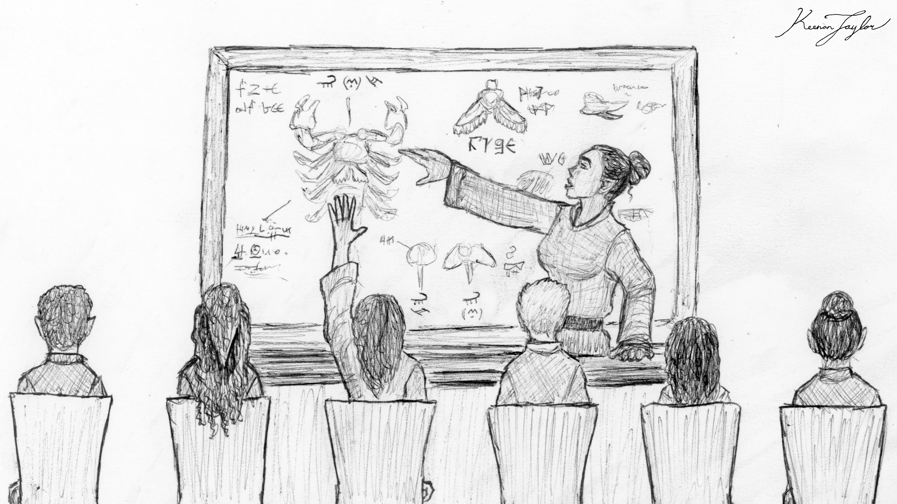
The arrival of these populations was associated with a devastating plague, and modern humans consequently acquired a negative reputation among many Kaimerans. Most modern Homo sapiens in the Known World remain concentrated in the Free States, where many occupy an enslaved or indentured social position. A smaller number of free humans have arrived through the Assembly, and their children sometimes attend integrated schools in Kabarahar.
These schools organize pupils according to developmental stage rather than chronological age. Nevertheless, differences in growth make lasting friendships between Kaimeran and human children difficult. A human child may mature rapidly and begin participating in conversations and activities that their Kaimeran peers are not yet ready to share. Friendships formed during childhood may therefore become strained as the human develops more quickly, even when the two children were initially close in age and ability.
Relationships between adults are generally more stable. Once both individuals have reached maturity, differences in their rates of aging become less immediately disruptive. Friendships can persist for decades, and the longer lifespan of the Kaimerans allows some relationships to continue across several human generations.